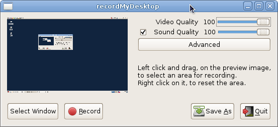

My previous setup did not work with pulse audio, so I had to remove it.
If pulse is removed while gdm is active it will shutdown X graphics.
Remove pulse audio and everything that depends on it.
yum list installed | grep pulse yum install gtk-recordmydesktop
Have a look at nux-dextop
install notes, add nux-dextop.repo with enabled=0, priority=40
xine-ui will bring back pulseaudio-libs but it should be harmless without pulse server
yum --enablerepo=nux-dextop install xine-ui
gtk-recordmydesktop will assume nothing about the source of the sound.
To succeed I need to set it correctly and turn off all sources of noise.
F4 [Capture] shows the example for recording the sound from "Front" speakers on my desk.
To activate "Capture" and "Capture 1" I used SPACE as they are OFF by default.
"Input Source" and "Input Source 1" should be Stereo Mix not Line,Front mic,Rear mic, etc.
To avoid noise, Front/Rear Mic Boost is set to 0 and "Digital" is moderate or low.
Master, Headphone, PCM will reduce the distortion from the bass.
Front reduces the noise level. Here is set for speakers at maximum.
All mics should be turned off. Surround, Center, LFE are ON.
Side and Line are important and must be ON.
"S/PDIF" and "S/PDIF Default PCM" must be ON as they indicate the source of input.
Loopback, Auto-mute, Dynamic are very important, must stay ON.
After playing a lot with the settings from gtk-recordmydesktop I think the missing sound was mainly due to the settings in alsa configuration. However here they are in case the defaults are changed in the future.
Last time that I recorded successfully my desktop I had the following software installed.
yum list installed | grep nux-dextop
HandBrake-cli.x86_64 0.9.9-5.el7.nux @nux-dextop
HandBrake-gui.x86_64 0.9.9-5.el7.nux @nux-dextop
a52dec.x86_64 0.7.4-18.el7.nux @nux-dextop
faac.x86_64 1.28-6.0.el7.nux @nux-dextop
faad2-libs.x86_64 1:2.7-5.el7.nux @nux-dextop
ffmpeg-libs.x86_64 2.6.3-1.el7.nux @nux-dextop
gstreamer-ffmpeg.x86_64 0.10.13-15.el7.nux @nux-dextop
gstreamer-plugins-bad.x86_64 0.10.23-5.el7.nux @nux-dextop
gstreamer-plugins-bad-nonfree.x86_64 0.10.23-2.el7.nux @nux-dextop
gstreamer-plugins-ugly.x86_64 0.10.19-17.el7.nux @nux-dextop
gstreamer1-libav.x86_64 1.0.6-1.el7.nux @nux-dextop
1.0.6-1.el7.nux @nux-dextop
gstreamer1-plugins-ugly.x86_64 1.0.6-2.el7.nux @nux-dextop
lame.x86_64 3.99.5-2.el7 @nux-dextop
lame-libs.x86_64 3.99.5-2.el7 @nux-dextop
lame-mp3x.x86_64 3.99.5-2.el7 @nux-dextop
libdca.x86_64 0.0.5-7.el7.nux @nux-dextop
libdvbpsi.x86_64 0.2.2-3.el7.nux @nux-dextop
libdvdcss.x86_64 1.2.13-1.el7.nux @nux-dextop
libmad.x86_64 0.15.1b-16.el7.nux @nux-dextop
libmimic.x86_64 1.0.4-7.el7.nux @nux-dextop
libmms.x86_64 0.6.4-1.el7.nux @nux-dextop
libmpeg2.x86_64 0.5.1-10.el7.nux @nux-dextop
libmpg123.x86_64 1.15.1-1.el7.nux @nux-dextop
libnemesi.x86_64 0.7.0-0.5.20110215git.el7.nux @nux-dextop
@nux-dextop
libsidplay.x86_64 1.36.60-2.el7.nux @nux-dextop
live555.x86_64 2013.11.26-1.el7.nux @nux-dextop
mjpegtools-libs.x86_64 2.1.0-5.el7.nux @nux-dextop
mp3gain.x86_64 1.5.2-5.el7.nux @nux-dextop
mpg123.x86_64 1.15.1-1.el7.nux @nux-dextop
mplayer-common.x86_64 1.1-33.20150505svn.el7.nux @nux-dextop
netembryo.x86_64 0.1.1-5.el7.nux @nux-dextop
nux-dextop-release.noarch 0-5.el7.nux @/nux-dextop-release-0-5.el7.nux.noarch
opencore-amr.x86_64 0.1.3-3.el7.nux @nux-dextop
simplescreenrecorder-libs.x86_64 0.3.3-1.el7.nux @nux-dextop
twolame-libs.x86_64 0.3.13-3.el7.nux @nux-dextop
vcdimager.x86_64 0.7.24-6.el7.nux @nux-dextop
vcdimager-libs.x86_64 0.7.24-6.el7.nux @nux-dextop
vo-amrwbenc.x86_64 0.1.2-1.el7.nux @nux-dextop
@nux-dextop
x265-libs.x86_64 1.6-1.el7.nux @nux-dextop
xine-lib.x86_64 1.2.6-8.el7.nux @nux-dextop
xine-lib-extras.x86_64 1.2.6-8.el7.nux @nux-dextop
xine-ui.x86_64 0.99.9-2.el7.nux @nux-dextop
xvidcore.x86_64 1.3.2-5.el7.nux @nux-dextop